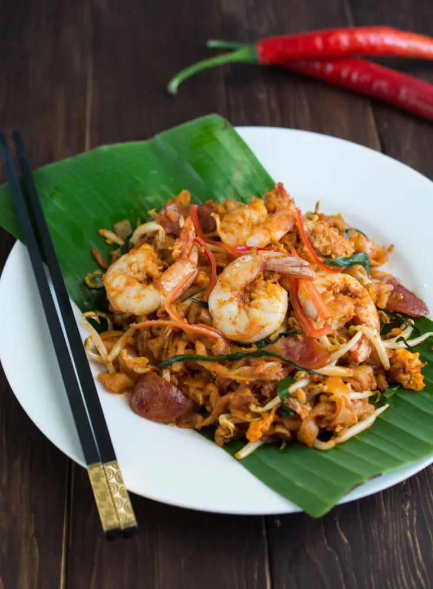

Char Kuey Teow Recipe

Description
Char Kuey Teow is one of the most famous dishes in Penang. Made from combination of sauces along with noodles and prawns!
Ingredients
- Kuey Teow
- Maggi's Chilli Sauce
- Beansprout
- Chives
- Prawn
- Egg
Steps
- Wash kuey teow and ingredients
- Cook prawn with oil on high heat
- Add 1-2 tablespoons of Maggi's chilli sauce
- Add kuey teow and cook until soft
- Add egg and stir until done